Everyone can take a photo, but taking a photo that makes people look up is a skill you have to work at.
Many people think a good photo needs expensive gear. In fact, it does not. What really decides the feel of a photo is often the details and angles that people overlook.
These 10 tips below do not cost gear or push settings. They focus on new ways of thinking. You can use them right away, and they work.
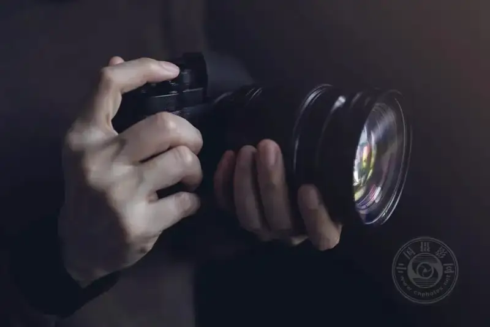
01 See the world from another angle
We look every day, but most of the time we 'look and do not see.'
The really interesting frames often hide outside the angles we are used to. Above, below, from the side, and on the ground all hold overlooked surprises.
Try to crouch down, lie down, or find a high point. Finding an unusual subject matters, but it matters more to shoot it from an unusual angle.
| The world is ordinary, but your lens can be far from ordinary.
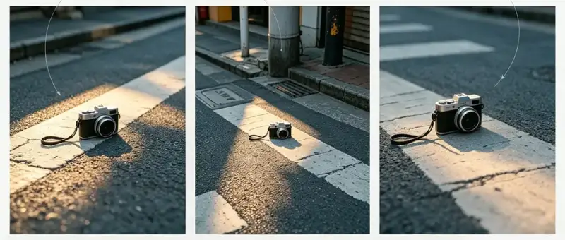
02 Do not always aim for the big wide view
This idea comes from filmmaking. Many people pick up a camera and want to shoot a 'big scene.' The result is a grand frame that feels empty.
In fact, what really gives a photo a sense of story is often the small details that the wide view misses. A fallen leaf, a crack in a wall, the wrinkles on an old hand. These details are the key pieces that build the mood.
The beauty of a camera is that you can pick it up at any time and shoot whatever you like. Go and catch the details that are always there but always missed.
| A wide view shows the place. Small details tell the story.
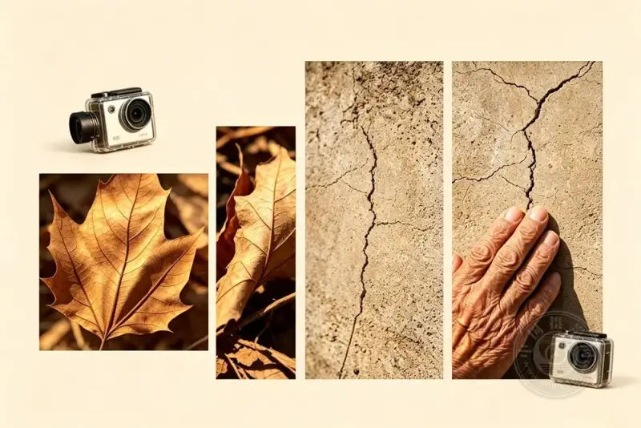
03 A cheap prop that fixes flare
Want sharper, clearer photos? Do not rush to change your lens.
Try this trick. Place a clean coffee filter in front of the lens, or use a thick coffee cup sleeve to block the light source.
This small move reduces unwanted flare and haze, and the photo clears up at once.
| High-end clarity sometimes only needs a paper filter.
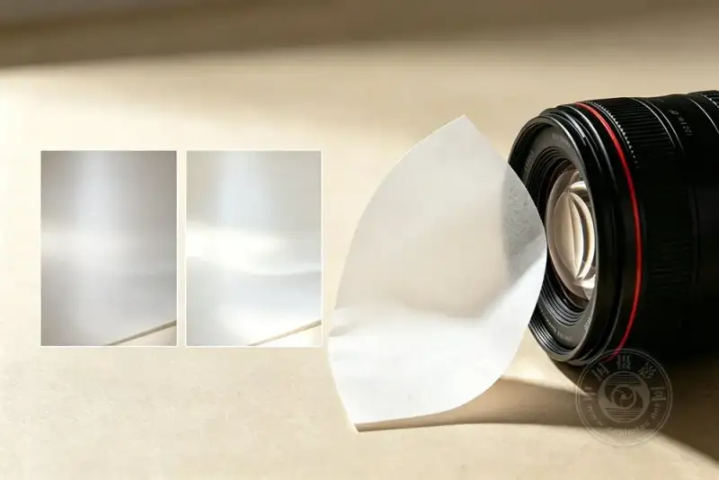
04 No good weather? Then "edit" one into it
Color and light are a direct way to send mood. Warm tones calm people. Cool tones make people quiet.
If the day you go out is overcast, do not lose heart. Editing software is your 'way back.' Adjust the color temperature and tint toward what you want.
But remember this. The highest level of editing makes people think 'the light is beautiful,' not 'the filter is heavy.' Keep it real, and stop in time.
| Post-processing edits the mood, not the truth.
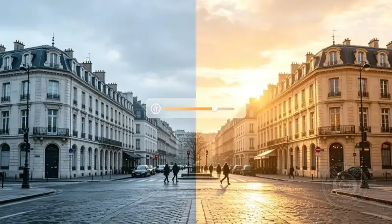
05 Ditch the one-click filter. Manual is the way
Many people still apply a built-in filter with one click. These general filters are 'rough' so they fit any photo. Details are smoothed away, texture is killed, and the colors all look the same.
If you want your photos to taste like 'you,' use a pro editor that lets you set the color and light parameters by hand.
Let each photo keep what the eye saw, then add the life you want to it. Or do the opposite, and make it darker and more mysterious. That is the right way to make your work unique.
| A filter is lazy. Manual work is creation.
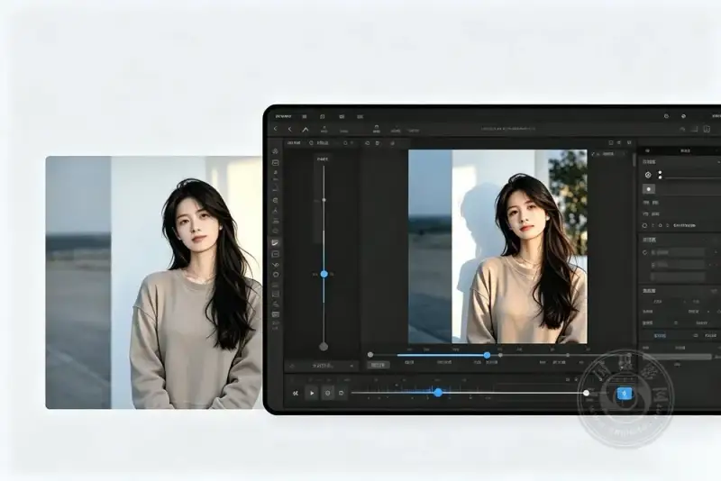
06 A CD makes dreamy colored light
Want a unique colored flare effect? You do not need to buy an expensive filter.
Find a discarded CD. Place it at the bottom of your lens and press the shutter. Light passes through the coating on the disc and refracts into a psychedelic colored glow. An artistic photo is born.
| Creativity often hides in reused waste.
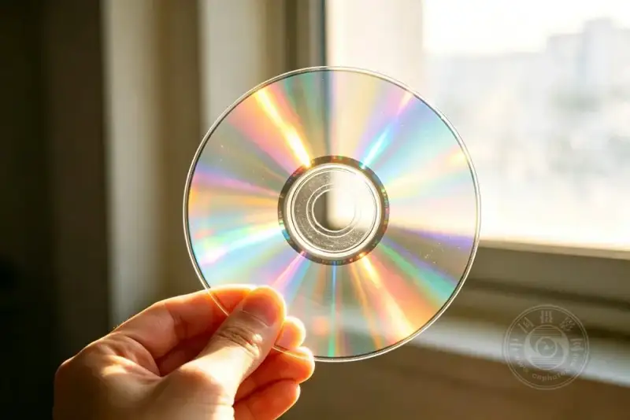
07 Shadows matter more than you think
Many beginners only watch the light and ignore the shadows.
Without shadows, a photo goes flat and loses its depth. But well-placed shadows give the frame depth and a story.
Do not fear shadows. Try cloth, paper stencils, or other props to make unusual shadow effects. Experiment boldly, and you will find that shadows tell a better story than light.
| Where there is light there is shadow. A photo with shadows has a soul.
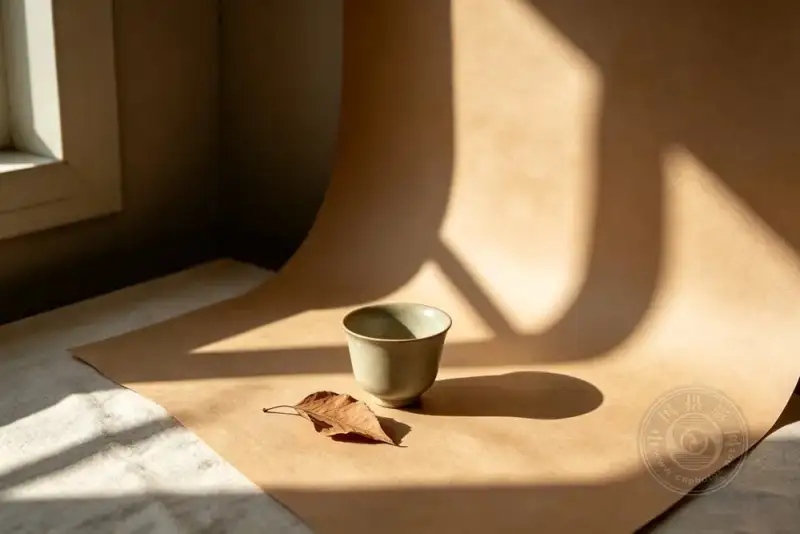
08 No waterproof camera? A plastic box saves the day
Want to shoot the underwater world but have no pro gear? Do not give up yet.
Find a clear plastic container. Make sure it is fully sealed and does not leak. Put your set-up camera inside, then lower it carefully into the water.
A simple 'underwater photo rig' is ready. It is not as flexible as a professional housing, but it is more than enough to take stunning underwater photos.
| Limits in gear cannot stop the imagination to create.
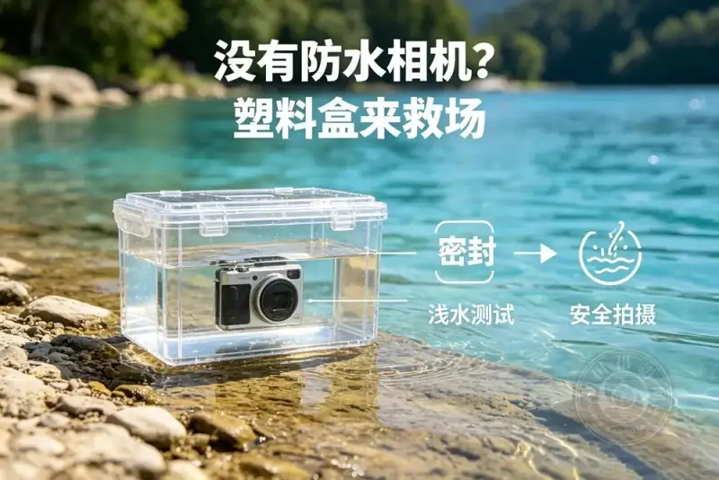
09 A two-tone film gives psychedelic color
Want to add an unusual color effect to a photo without editing software?
Take a two-tone film with a hole in the middle and slip it over the camera lens. With no special gear, press the shutter and get a photo with fantastic, experimental color.
The randomness and the fact that you cannot copy it are exactly what makes this method so charming.
| Sometimes the imperfect is the most perfect.
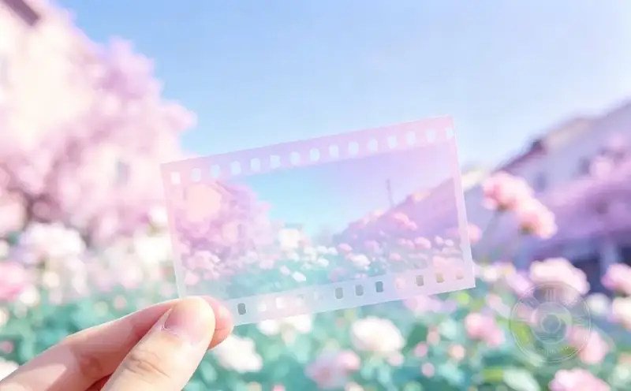
10 Do not get trapped in one style
When you first take a few good photos, it is easy to fall into a 'path dependency.' You feel this style is your label, and you repeat it again and again.
Stop in time.
Jump from minimalism to landscape photography. Switch from portraits to street snapshots. Try a completely different field boldly. After a while, look back. You may return to your old style with new understanding, or you may find a whole new world.
| Style flows. It is not locked.
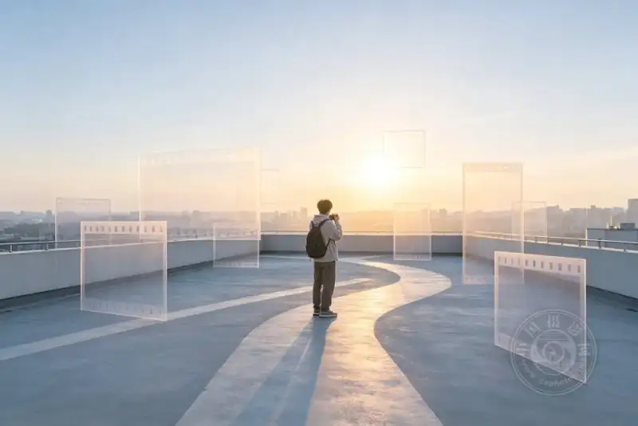
The last rule: there are no rules
All the tips, rules, and experience exist to help you express yourself better.
But if one day you decide to break a rule of photography,
ask yourself one question first: 'Why?'
If the answer is clear, go ahead and shoot.
Listen to your inner voice and create your own unique images. That is the real appeal of photography.